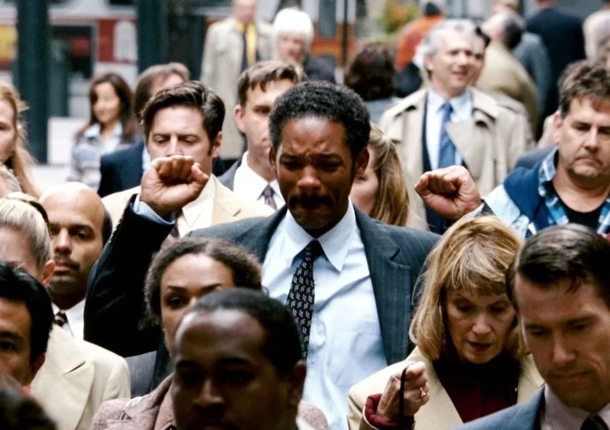

Sinopse
Chris Gardner (Will Smith) é um pai de família batalhador que enfrenta sérias dificuldades financeiras em São Francisco. Após investir todas as suas economias em um negócio que fracassa, ele é abandonado pela esposa e se vê sozinho com o filho pequeno, Christopher (Jaden Smith) Sem casa e lutando para sobreviver, Chris encontra uma oportunidade como estagiário em uma prestigiada corretora de ações. O estágio, porém, é não remunerado, e ele precisa competir com outros candidatos para conquistar um único emprego, enquanto tenta cuidar do filho e superar os desafios diários, incluindo passar noites em abrigos ou estações de metrô. Com determinação inabalável e amor por seu filho, Chris luta por uma vida melhor, provando que com trabalho duro e esperança é possível superar as adversidades. Baseado em uma história real, o filme é uma inspiradora jornada de resiliência, coragem e amor paternal
continue...